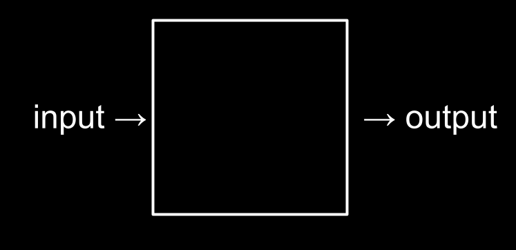
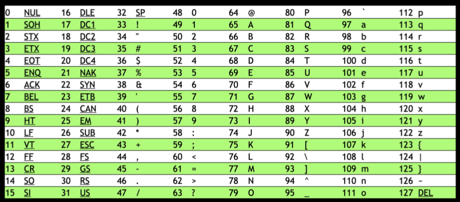
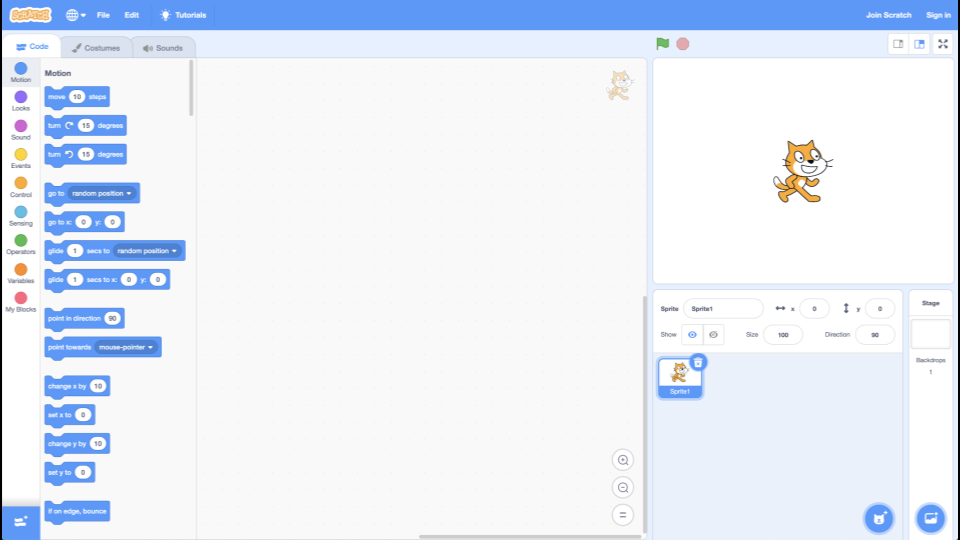
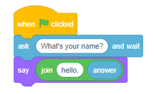

Lecture 0
- Welcome!
- What’s Ahead
- Community!
- Computational Thinking
- Text
- Emojis
- RGB
- Images, Video and Sound
- Algorithms
- Pseudocode and the Basic Building Blocks of Programming
- Scratch
- Abstraction
- If
- Expanding Your Imagination
- Sprite Movement
- More Sprites
- Summing Up
Welcome!
- This class is about more than computer programming!
- Indeed, this class is about problem-solving in a way that is exceedingly empowering! You will likely take the problem solving that you learn here will likely be instantly applicable to your work beyond this course and even your career as a whole!
- However, it will not be easy! You will be “drinking from the firehose” of knowledge during this course. You’ll be amazed at what you will be able to accomplish in the coming weeks.
- This course is far more about you advancing “you” from “where you are today” than hitting some imagined standard.
- The most important opening consideration in this course: Give the time you need to learn through this course. Everyone learns differently. If something does not work out well at the start, know that with time you will grow and grow in your skill.
What’s Ahead
- You will be learning this week about Scratch, a visual programming language.
-
Then, in future weeks, you will learn about C. That will look something like this:
#include <stdio.h> int main(void) { printf("hello, world\n"); } - Further, as the weeks progress, you will learn about algorithms.
- You will learn about memory.
- You will learn about buggy code and what causes computer crashes.
- You will learn about data structures such as a hash table.
-
Then, we will transition to a new, higher-level language called Python. Your code will look something like this:
print("hello, world") - This class will give you a strong understanding of how recent programming languages developed from the earlier ones.
- We will also be looking at how we can use databases and third-party frameworks to build web applications.
Community!
- You are part of a community of those taking this course at Harvard College, Harvard Extension School, and via edX.org.
- Puzzle Day and the CS50 Fair
Computational Thinking
-
Essentially, computer programming is about taking some input and creating some output - thus solving a problem. What happens in between the input and output, what we could call a black box, is the focus of this course.

- For example, we may need to take attendance for a class. We could use a system called unary to count, one finger at a time. Computers today count using a system called binary. It’s from the term binary digit that we get a familiar term called bit. A bit is a zero or one.
- Computers only speak in terms of zeros and ones. Zeros represent off. Ones represent on. Computers are millions, and perhaps billions, of transistors that are being turned on and off.
- If you imagine using a light bulb, a single bulb can only count from zero to one.
- However, if you were to have three light bulbs, there are more options open to you!
-
Using three light bulbs, the following could represent zero:
0 0 0 -
Similarly, the following would represent one:
0 0 1 -
By this logic, we could propose that the following equals two:
0 1 0 -
Extending this logic further, the following represents three:
0 1 1 -
Four would appear as:
1 0 0 -
We could, in fact, using only three light bulbs count as high as seven!
1 1 1 -
As a heuristic, we could imagine that the following values represent each possible place in our binary digit:
4 2 1 -
Computers use ‘base-2’ to count. This can be pictured as follows:
2^2 2^1 2^0 4 2 1 -
Therefore, you could say that it would require three bits (the four’s place, the two’s place, and the one’s place) to represent a number as high as seven.
- Computers generally use eight bits to represent a number. For example,
00000101is the number 5 in binary.
Text
- Just as numbers are binary patterns of ones and zeros, letters are represented using ones and zeros too!
- Since there is an overlap between the ones and zeros that represent numbers and letters, the ASCII standard was created to map specific letters to specific numbers.
- For example, the letter
Awas decided to map to the number 65. -
If you received a text message, the binary under that message might represent the numbers 72, 73, and 33. Mapping these out to ASCII, your message would look as follows:
H I ! 72 73 33 - Thank goodness for standards like ASCII that allow us to agree upon these values!
-
Here is an expanded map of ASCII values:

- If you wish, you can learn more about ASCII.
Emojis
- As time has rolled on, there are more and more ways to communicate via text.
- Since there were not enough digits in binary to represent all the various characters that could be represented by humans, the Unicode standard expanded the number of bits that can be transmitted and understood by computers.
-
There are emojis that you probably use every day. The following may look familiar to you:

- Computer scientists faced a challenge when wanting to assign various skin tones to each emoji to allow the communication to be further personalized. In this case, the creators and contributors of emojis decided that the initial bits would be the structure of the emoji itself, followed by skin tone.
- More and more features are being added to the Unicode standard to represent further characters and emojis.
- If you wish, you can learn more about Unicode.
- If you wish, you can learn more about emojis.
RGB
-
Red, green, and blue (called
RGB) is a combination of three numbers.
-
Taking our previously used 72, 73, and 33, which said
HI!via text, would be interpreted by image readers as a light shade of yellow. The red value would be 72, the green value would be 73, and the blue would be 33.
Images, Video and Sound
- Images are simply collections of RGB values.
- Videos are sequences of many images that are stored together, just like a flipbook.
- Music can be represented through MIDI data.
Algorithms
- Problem-solving is central to computer science and computer programming.
- Imagine the basic problem of trying to locate a single name in a phone book.
- How might you go about this?
- One approach could be to simply read from page one to the next to the next until reaching the last page.
- Another approach could be to search two pages at a time.
- A final and perhaps better approach could be to go to the middle of the phone book and ask, “Is the name I am looking for to the left or to the right?” Then, repeat this process, cutting the problem in half and half and half.
-
Each of these approaches could be called algorithms. The speed of each of these algorithms can be pictured as follows in what is called big-O notation:
 Notice that the first algorithm, highlighted in red, has a big-O of
Notice that the first algorithm, highlighted in red, has a big-O of nbecause if there are 100 names in the phone book, it could take up to 100 tries to find the correct name. The second algorithm, where two pages were searched at a time, has a big-O of ‘n/2’ because we searched twice as fast through the pages. The final algorithm has a big-O of log2n as doubling the problem would only result in one more step to solve the problem.
Pseudocode and the Basic Building Blocks of Programming
- The ability to create pseudocode is central to one’s success in both this class and in computer programming.
-
Pseudocode is a human-readable version of your code. For example, considering the third algorithm above, we could compose pseudocode as follows:
1 Pick up phone book 2 Open to middle of phone book 3 Look at page 4 If person is on page 5 Call person 6 Else if person is earlier in book 7 Open to middle of left half of book 8 Go back to line 3 9 Else if person is later in book 10 Open to middle of right half of book 11 Go back to line 3 12 Else 13 Quit - Pseudocoding is such an important skill for at least two reasons. First, when you pseudocode before you create formal code, it allows you to think through the logic of your problem in advance. Second, when you pseudocode, you can later provide this information to others that are seeking to understand your coding decisions and how your code works.
- Notice that the language within our pseudocode has some unique features. First, some of these lines begin with verbs like pick up, open, look at. Later, we will call these functions.
- Second, notice that some lines include statements like
iforelse if.These are called conditionals. - Third, notice how there are expressions that can be stated as true or false, such as “person is earlier in the book.” We call these boolean expressions.
- Finally, notice how these statements like “go back to line 3.” We call these loops.
- In the context of Scratch, which is discussed below, we will use each of the above basic building blocks of programming.
Scratch
- Scratch is a visual programming language developed by MIT.
- Scratch utilizes the same essential coding building blocks that we covered earlier in this lecture.
- Scatch is a great way to get into computer programming because it allows you to play with these building blocks in a visual manner, not having to be concerned about the syntax of curly braces, semicolons, parentheses, and the like.
-
Scatch
IDE(integrated development environment) looks like the following: Notice that on the left, there are building blocks that you can use in your programming. To the immediate right of the building blocks, there is the area to which you can drag blocks to build a program. To the right of that, you see the stage where a cat stands. The stage is where your programming comes to life.
-
Scratch operates on a coordinate system as follows:
 Notice that the center of the stage is at coordinate (0,0). Right now, the cat’s position is at that same
position.
Notice that the center of the stage is at coordinate (0,0). Right now, the cat’s position is at that same
position. -
To begin, drag the “when green flag clicked” building block to the programming area. Then, drag the
saybuilding block to the programming area and attach it to the previous block.
Notice that when you click the green flag now, on the stage, the cat says, “hello world.”
-
This illustrates quite well what we were discussing earlier regarding programming:
 Notice that the input
Notice that the input hello worldis passed to the functionsay, and the side effect of that function running is the cat sayinghello world. -
We can make your program more interactive by having the cat say
helloto someone specific. Modify your program as below:
Notice that when the green flag is clicked, the function
askis run. The program prompts you, the user,What's your name?It then stores that name in the variable calledanswer. The program then passesanswerto a special function calledjoin, which combines two strings of texthello, and whatever name was provided. These collectively are passed to thesayfunction. The cat says,Hello,and a name. Your program is now interactive. -
Quite similarly, we can modify our program as follows:

Notice that this program, when the green flag is clicked, passes the same variable, joined with
hello, to a function calledspeak.
Abstraction
- Along with pseudocoding, abstraction is an essential skill and concept within computer programming.
- Abstraction is the act of simplifying a problem into smaller and smaller problems.
- For example, if you were hosting a huge dinner for your friends, the problem of having to cook the entire meal could be quite overwhelming! However, if you break down the task of cooking the meal into smaller and smaller tasks (or problems), the big task of creating this delicious meal might feel less challenging.
-
In programming, and even within Scratch, we can see abstraction in action. In your programming area, program as follows:

Notice that you are doing the same thing over and over again. Indeed, if you see yourself repeatedly coding the same statements, it’s likely the case that you could program more artfully – abstracting away this repetitive code.
-
You can modify your code as follows:

Notice that the loop does exactly as the previous program did. However, the problem is simplified by abstracting away the repetition to a block that repeats the code for us.
-
We can even advance this further by using the
defineblock, where you can create your own block (your own function)! Write code as follows:

Notice that we are defining our own block called
meow. The function plays the soundmeow, then waits one second. Below that, you can see that when the green flag is clicked, our meow function is repeated three times. -
We can even provide a way by which the function can take an input
nand repeat a number of times:

Notice how
nis taken from “meow n times.”nis passed to the meow function through thedefineblock. - The cat, by the way, we can call a
sprite– a general term used in game programming for an object or character on the screen with which the player will interact.
If
- conditionals are an essential building block of programming, where the program looks to see if a specific condition has been met. If a condition is met, the program does something.
-
To illustrate a conditional, write code as follows:
when green flag clicked forever if <touching (mouse-pointer v)?> then play sound (Meow v) until doneNotice that the
foreverblock is utilized such that theifblock is triggered over and over again, such that it can check continuously if the cat is touching the mouse pointer. -
We can modify our program as follows to integrate video sensing:
when video motion > (50) play sound (Meow v) until done - Remember, programming is often a process of trial and error. If you get frustrated, take time to talk yourself through the problem at hand. What is the specific problem that you are working on right now? What is working? What is not working?
Expanding Your Imagination
- We showed you in this lecture a number of Scratch programs to stoke your imagination.
- Oscartime is one of David’s own Scratch programs – though the music may haunt him because of the number of hours he listened to it while creating this program. Take a few moments to play through the game yourself.
-
Building Oscartime ourselves, we first add the lamp post.

-
Then, write code as follows:
when green flag clicked switch costume to (oscar1 v) forever if <touching (mouse-pointer v)?> then switch costume to (oscar2 v) else switch costume to (oscar1 v)Notice that moving your mouse over Oscar changes his costume. You can learn more by exploring these code blocks.
-
Then, modify your code as follow to create a falling piece of trash:
when green flag clicked go to x: (pick random (-240) to (240)) y: (180) forever if <(distance to (floor v)) > (0)> then change y by (-3)Notice that the trash’s position on the y-axis always begins at 180. The x position is randomized. While the trash is above the floor, it goes down 3 pixels at a time. You can learn more by exploring these code blocks.
-
Next, modify your code as follows to allow for the possibility of dragging trash.
when green flag clicked forever if <<mouse down?> and <touching (mouse-pointer v) ?>> then go to (mouse-pointer v)You can learn more by exploring these code blocks.
-
Next, we can implement the scoring variables as follows:
when green flag clicked forever if <touching (Oscar v) ?> then change (score) by (1) go to x: (pick random (-240) to (240)) y: (180)You can learn more by exploring these code blocks.
Sprite Movement
- Moving away from Oscartime to Ivy’s Hardest Game, we can now imagine how to implement movement within our program.
- Our program has three main components.
-
First, write code as follows:
when green flag clicked go to x: (0) y: (0) forever listen for keyboard feel for wallsNotice that when the green flag is clicked, our sprite moves to the center of the stage at coordinates (0,0) and then listens for the keyboard and checks for walls forever.
-
Second, add this second group of code blocks:
define listen for keyboard if <key (up arrow v) pressed?> then change y by (1) end if <key (down arrow v) pressed?> then change y by (-1) end if <key (right arrow v) pressed?> then change x by (1) end if <key (left arrow v) pressed?> then change x by (-1) endNotice how we have created a custom
listen for keyboardscript. For each of our arrow keys on the keyboard, it will move the sprite around the screen. -
Finally, add this group of code blocks:
define feel for walls if <touching (left wall v) ?> then change x by (1) end if <touching (right wall v) ?> then change x by (-1) endNotice how we also have a custom
feel for wallsscript. When a sprite touches a wall, it moves it back to a safe position – preventing it from walking off the screen. - You can learn more by exploring these code blocks.
- Go try the full game Oscartime.
More Sprites
- Scratch allows for many sprites to be on the screen at once.
-
Adding another sprite, add the following code blocks to your program:
when green flag clicked go to x: (0) y: (0) point in direction (90) forever if <<touching (left wall v)?> or <touching (right wall v)?>> then turn right (180) degrees end move (1) steps endNotice how the Yale sprite seems to get in the way of the Harvard sprite by moving back and forth. When it bumps into a wall, it turns around until it bumps the wall again. You can learn more by exploring these code blocks.
-
You can even make a sprite follow another sprite. Adding another sprite, add the following code blocks to your program:
when green flag clicked go to (random position v) forever point towards (Harvard v) move (1) stepsNotice how the MIT logo now seems to follow around the Harvard one. You can learn more by exploring these code blocks.
- Go try the full game Ivy’s Hardest Game.
Summing Up
In this lesson, you learned how this course sits in the wide world of computer science and programming. You learned…
- Few students come to this class with prior coding experience!
- You are not alone! You are part of a community.
- Problem solving is the essence of the work of computer scientists.
- This course is not simply about programming – this course will introduce you to a new way of learning that you can apply to almost every area of life.
- How numbers, text, images, music, and video are understood by computers.
- The fundamental programming skill of pseudocoding.
- How abstraction will play a role in your future work in this course.
- The basic building blocks of programming, including functions, conditionals, loops, and variables.
- How to build a project in Scratch.
See you next time!